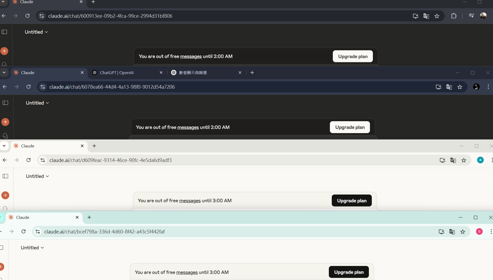
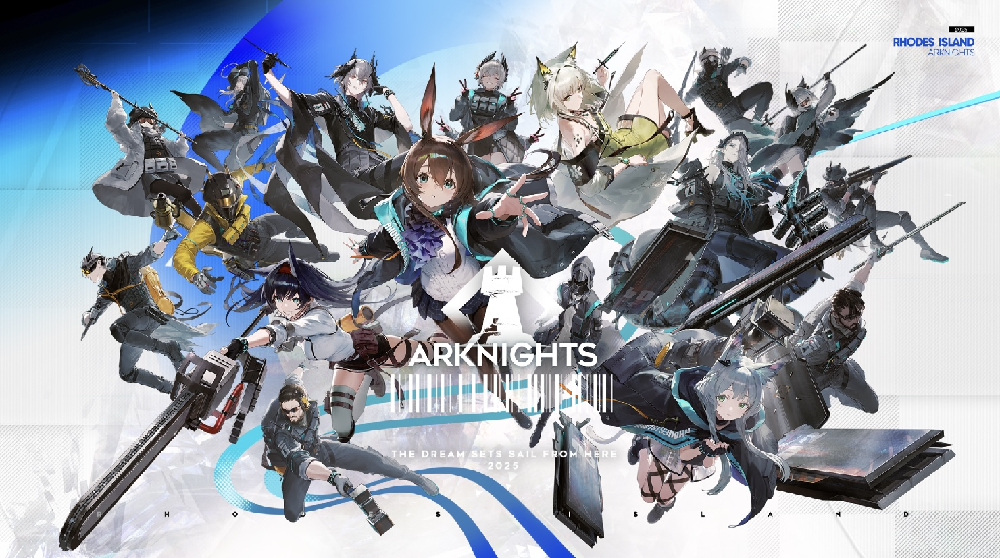

老師請見諒這份作業不如預期般的完整(因為同時間還有其他作業在追殺),
這個作業的靈感來源於跟遊戲網友聊天時的開玩笑,
主要的角色其實是斯科特(那個阿哈是我額外加的樂子)他是崩壞 星穹鐵道的一個npc,
就是一個塑造挺成功的一個反派(搞笑方面),
然後原本預計差不多做三天應該就能搞定,然而我搞了超過2個禮拜還沒搞完
(因為我原本以為只要3個網頁,然後弄了8個網頁才搞定)
欸 對了老師如果是先看到這個我可以說一下"建議聲音不要調太大聲",
因為我在做的時候都被預設的聲音嚇死
另類名場面
我就是免費戰神(那個訂閱費用好貴)
下面是隔壁遊戲我最近推的人們(精英幹員)
(outcast奶奶好可愛,怕帽子飛走,小邏依舊優雅)
